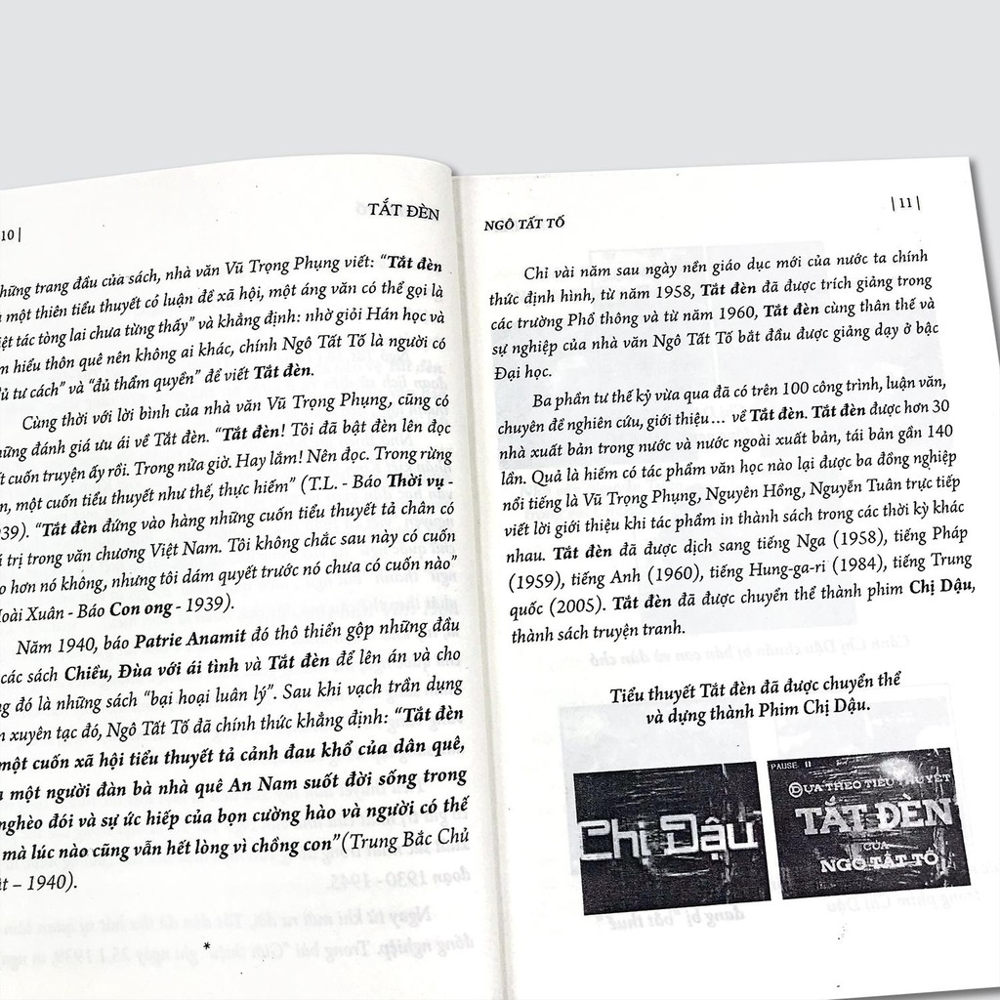

"Once you learn to read, you will be forever free." — Frederick Douglass
Dừng chân trên văn đàn Việt Nam, bắt gặp từng con chữ của Ngô Tất Tố, người ta chẳng thể nào ngừng xót xa cho những nhân vật trong “Tắt đèn”. Quẩn quanh trong đồng thuế vô lý, bất lực trước sự tha hóa của lòng người, oằn mình trong vòng xoáy của cơm áo gạo tiền. Chưa bao giờ tính mạng con người lại trở nên rẻ rúng đến vậy. “ Tắt đèn” đã phác họa những nét vẽ vô cùng chân thực về một xã hội Việt Nam trước 1945.
Tác phẩm lấy bối cảnh xã hội Việt Nam trước năm 1945 để kể về gia đình chị Dậu trong những ngày đến hạn nộp sưu thuế, phải dùng đủ mọi cách để xoay tiền, phải quỳ gối trước đám lính, trước quan lại. Từ đó làm nổi bật nên sự thống khổ của người dân Việt Nam trước ách đô hộ của thực dân Pháp và chế độ phong kiến.
Ngòi bút hiện thực lách sâu vào một xã hội mục nát.
Trung tâm câu chuyện là gia đình chị Dậu, thuộc hạng “cùng đinh” và theo như tác giả, có lẽ gia đình chị đã thuộc hạng nghèo nhất của xã hội. Song, cái nghèo đấy lại không bắt nguồn từ bản thân gia đình chị Dậu mà bắt nguồn từ những chính sách vô lý của nhà nước.
Thực dân Pháp tiến hành xâm lược và áp đặt lên đất nước ta hàng loạt những chính sách đô hộ. Những người nông dân nghèo khổ nai lưng chống chọi với một lúc với bọn thực dân độc ác và chế độ phong kiến hà khắc. Hàng trăm những thứ thuế vô lý được đặt ra, đè nặng lên vai của những người dân hèn mọn, trong đó có thuế đinh. Gia đình chị Dậu sau khi chịu hai tang liên tiếp (của mẹ chồng và chú Hợi) vẫn phải loay hoay nghĩ cách để nộp thuế cho nhà nước, cái thứ thuế mà chị phải nộp cho cả người chết.
Làm sao mà không xót xa cho được khi chứng kiến chị Dậu phải bán cả con để xoay sở đồng tiền sưu thuế? Làm sao mà không xót xa khi thấy đám lính đánh đập người chồng ốm yếu của chị chỉ chị không thể xoay được tiền sưu? Ở xã hội đó, đồng tiền xoay vần, chuyển trắng thay đen, đồng tiền có khả năng sai bảo được tất thảy. Nó được đặt trên cả đạo đức hay phẩm chất, tình thương hay lòng vị tha, con người ta có tiền thì không cần quan tâm tình người.
Ta một lần nữa lại đau khi chứng kiến gia đình chị Dậu bị dồn vào đường cùng của sự bất hạnh, cơm không có ăn, áo không có mặc. Một lần nữa khóc khi đám lính sẵn sàng đánh đập anh Dậu, không màng đến sống chết của anh chỉ để lấy bằng được thứ tiền sưu được cắt ra từ máu của người dân. Một xã hội mà con người ta không có quyền sống, quyền làm người, sự bế tắc cửa một đất nước một cổ hai tròng đã mục ruỗng đến tận gốc đã được Ngô Tất Tố khắc họa rất thành công.
Email: castleonthehill@gmail.com
Tel: 000.123456789